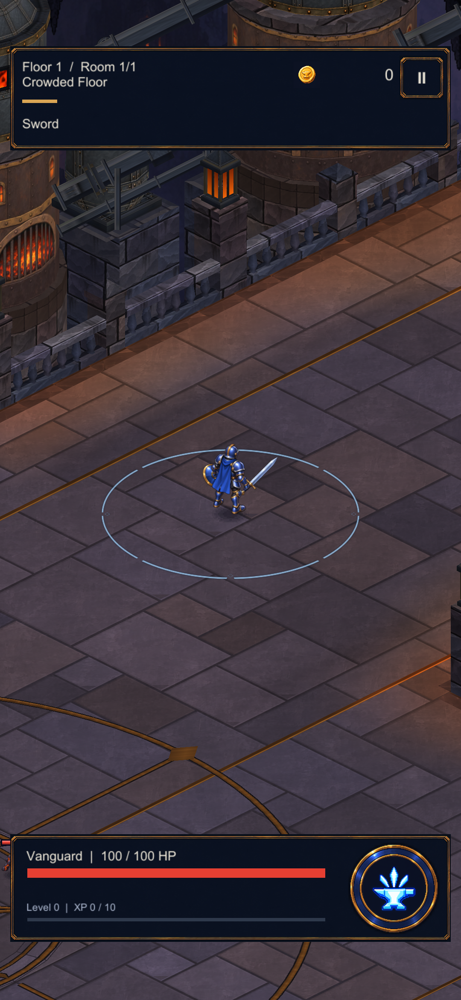
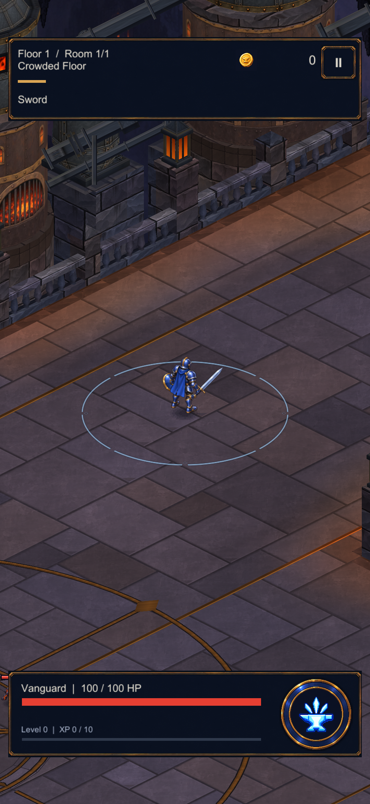

Dökümhane · Kullanılmış zemin
Atölye eşiğinde geniş kurum, kazan çevresinde servis izleri ve kapı yolunda aşınma tonu. Aynı Unity kamerasıyla önce/sonra. Bu sınırlı bir yüzey düzenlemesi; harita geometrisi ve oynanış değişmedi.
Önce
Sonra
17 statik renderer korunuyor. Işık örneklemesinin uyarlanmasıyla 80.316 → 80.344 vertex (+28). Yeni doku veya materyal yok.